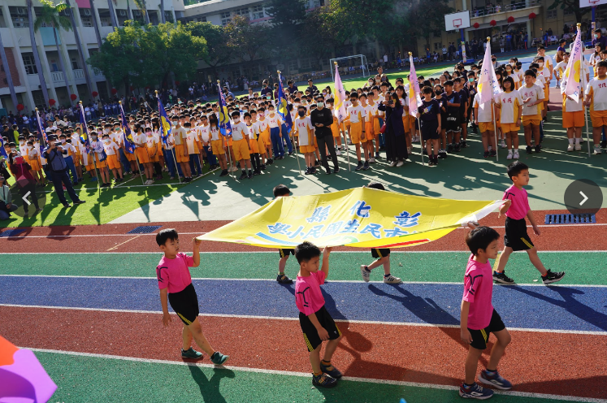

Story 01 · Opening
Sports Day
運動會開幕
The sports day ceremony opened with speeches from the principal and staff members, followed by the release of colorful balloons and the lighting of the torch. Finally, the students proudly marched and waved flags in honor of their school.
運動會的開幕典禮由校長和教職員的致詞開始，隨後放飛色彩繽紛的氣球並點燃火炬。最後，學生們自豪地列隊行進，揮舞旗幟以表彰他們的學校。
Listen · 聆聽範讀